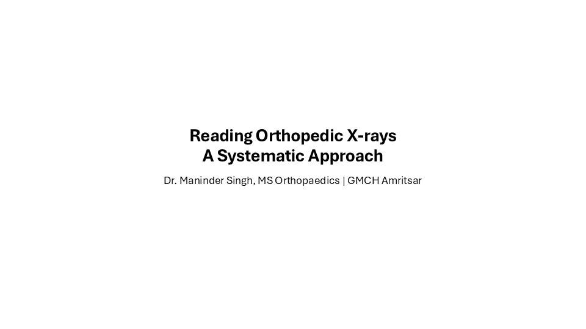
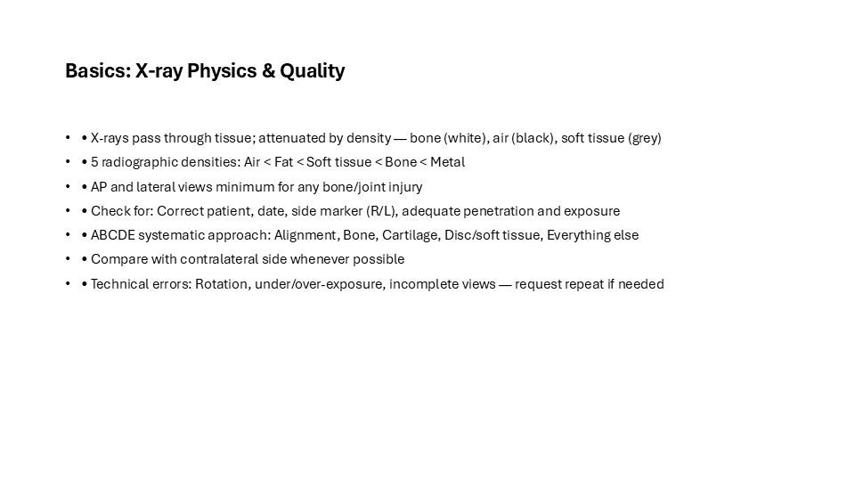
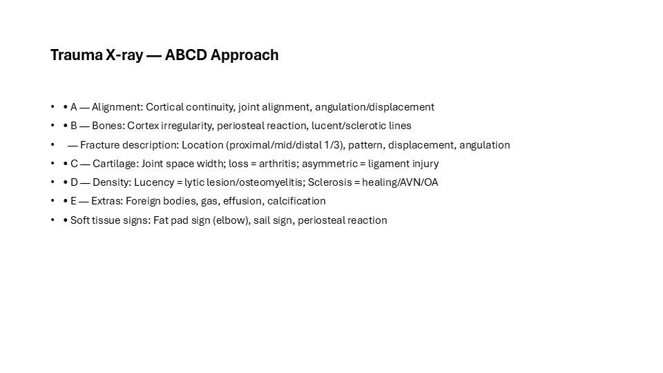
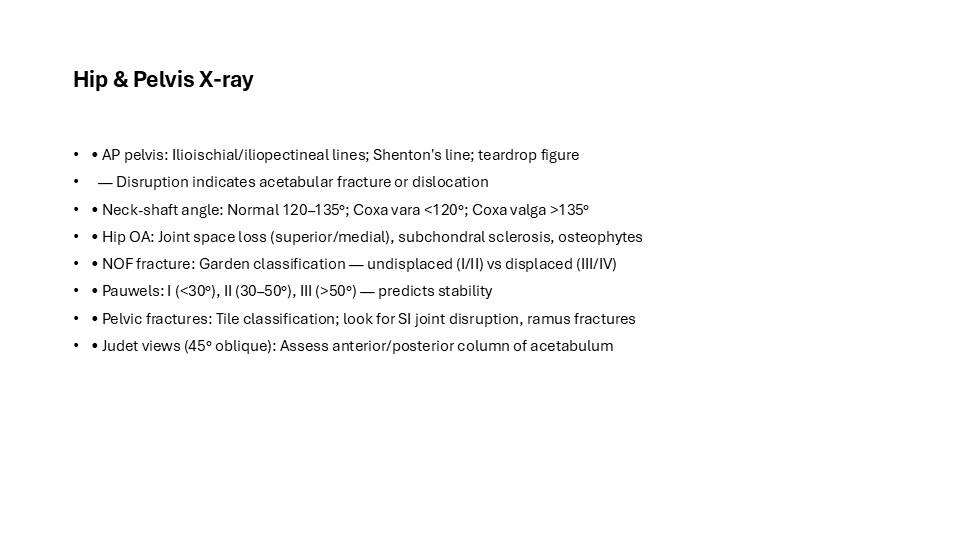
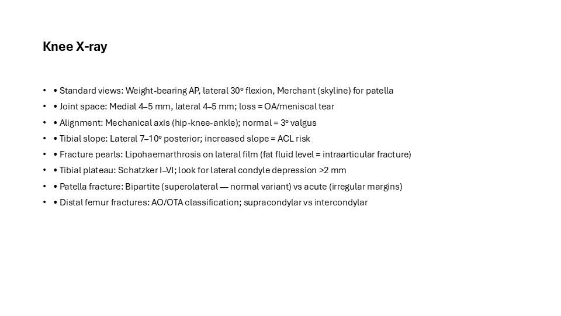
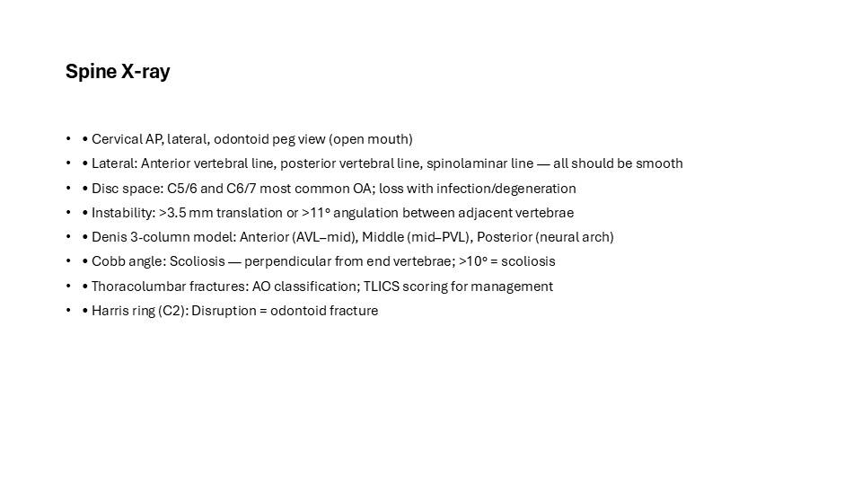
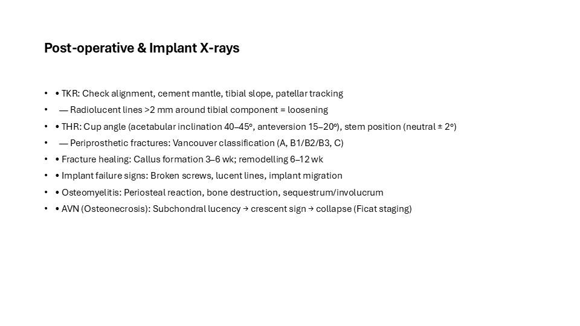
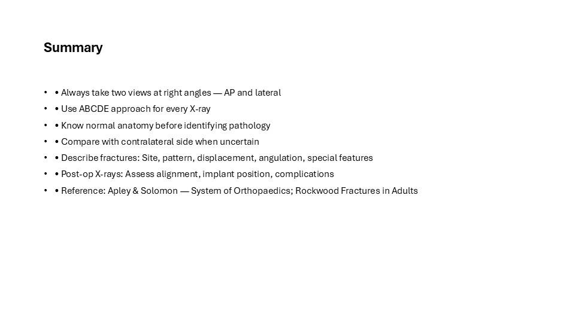

This is the full illustrated version of a teaching presentation prepared by Dr. Maninder Singh (GMCH Amritsar). Every slide is shown below with its text, so you can read it like an article — or download the original PowerPoint (.pptx) to teach from it. Topics covered include: Basics: X-ray Physics & Quality; Trauma X-ray — ABCD Approach; Hip & Pelvis X-ray; Knee X-ray; Spine X-ray; Post-operative & Implant X-rays; Summary.
Contents — jump to a slide (8)

Reading Orthopedic X-rays A Systematic Approach
Dr. Maninder Singh, MS Orthopaedics | GMCH Amritsar

Basics: X-ray Physics & Quality
- • X-rays pass through tissue; attenuated by density — bone (white), air (black), soft tissue (grey)
- • 5 radiographic densities: Air < Fat < Soft tissue < Bone < Metal
- • AP and lateral views minimum for any bone/joint injury
- • Check for: Correct patient, date, side marker (R/L), adequate penetration and exposure
- • ABCDE systematic approach: Alignment, Bone, Cartilage, Disc/soft tissue, Everything else
- • Compare with contralateral side whenever possible
- • Technical errors: Rotation, under/over-exposure, incomplete views — request repeat if needed

Trauma X-ray — ABCD Approach
- • A — Alignment: Cortical continuity, joint alignment, angulation/displacement
- • B — Bones: Cortex irregularity, periosteal reaction, lucent/sclerotic lines
- — Fracture description: Location (proximal/mid/distal 1/3), pattern, displacement, angulation
- • C — Cartilage: Joint space width; loss = arthritis; asymmetric = ligament injury
- • D — Density: Lucency = lytic lesion/osteomyelitis; Sclerosis = healing/AVN/OA
- • E — Extras: Foreign bodies, gas, effusion, calcification
- • Soft tissue signs: Fat pad sign (elbow), sail sign, periosteal reaction

Hip & Pelvis X-ray
- • AP pelvis: Ilioischial/iliopectineal lines; Shenton's line; teardrop figure
- — Disruption indicates acetabular fracture or dislocation
- • Neck-shaft angle: Normal 120–135°; Coxa vara <120°; Coxa valga >135°
- • Hip OA: Joint space loss (superior/medial), subchondral sclerosis, osteophytes
- • NOF fracture: Garden classification — undisplaced (I/II) vs displaced (III/IV)
- • Pauwels: I (<30°), II (30–50°), III (>50°) — predicts stability
- • Pelvic fractures: Tile classification; look for SI joint disruption, ramus fractures
- • Judet views (45° oblique): Assess anterior/posterior column of acetabulum

Knee X-ray
- • Standard views: Weight-bearing AP, lateral 30° flexion, Merchant (skyline) for patella
- • Joint space: Medial 4–5 mm, lateral 4–5 mm; loss = OA/meniscal tear
- • Alignment: Mechanical axis (hip-knee-ankle); normal = 3° valgus
- • Tibial slope: Lateral 7–10° posterior; increased slope = ACL risk
- • Fracture pearls: Lipohaemarthrosis on lateral film (fat fluid level = intraarticular fracture)
- • Tibial plateau: Schatzker I–VI; look for lateral condyle depression >2 mm
- • Patella fracture: Bipartite (superolateral — normal variant) vs acute (irregular margins)
- • Distal femur fractures: AO/OTA classification; supracondylar vs intercondylar

Spine X-ray
- • Cervical AP, lateral, odontoid peg view (open mouth)
- • Lateral: Anterior vertebral line, posterior vertebral line, spinolaminar line — all should be smooth
- • Disc space: C5/6 and C6/7 most common OA; loss with infection/degeneration
- • Instability: >3.5 mm translation or >11° angulation between adjacent vertebrae
- • Denis 3-column model: Anterior (AVL–mid), Middle (mid–PVL), Posterior (neural arch)
- • Cobb angle: Scoliosis — perpendicular from end vertebrae; >10° = scoliosis
- • Thoracolumbar fractures: AO classification; TLICS scoring for management
- • Harris ring (C2): Disruption = odontoid fracture

Post-operative & Implant X-rays
- • TKR: Check alignment, cement mantle, tibial slope, patellar tracking
- — Radiolucent lines >2 mm around tibial component = loosening
- • THR: Cup angle (acetabular inclination 40–45°, anteversion 15–20°), stem position (neutral ± 2°)
- — Periprosthetic fractures: Vancouver classification (A, B1/B2/B3, C)
- • Fracture healing: Callus formation 3–6 wk; remodelling 6–12 wk
- • Implant failure signs: Broken screws, lucent lines, implant migration
- • Osteomyelitis: Periosteal reaction, bone destruction, sequestrum/involucrum
- • AVN (Osteonecrosis): Subchondral lucency → crescent sign → collapse (Ficat staging)

Summary
- • Always take two views at right angles — AP and lateral
- • Use ABCDE approach for every X-ray
- • Know normal anatomy before identifying pathology
- • Compare with contralateral side when uncertain
- • Describe fractures: Site, pattern, displacement, angulation, special features
- • Post-op X-rays: Assess alignment, implant position, complications
- • Reference: Apley & Solomon — System of Orthopaedics; Rockwood Fractures in Adults
Use this deck in your teaching
The original editable PowerPoint is free to download for non-commercial teaching, with credit to the author. Questions or corrections? Contact us.
About this deck
Prepared by Dr. Maninder Singh (MS Orthopaedics, Associate Professor, GMCH Amritsar) for postgraduate and clinical teaching. Where images are from open-licence sources (for example Wikimedia Commons), the licence and author appear on the slide. See our editorial policy. Educational use only — not medical advice; see Terms & Medical Disclaimer.